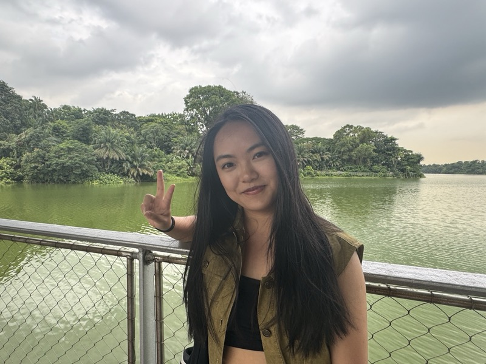
I build pipelines that turn raw neural signals into clear, actionable stories.
Neural signal processing across LFP, coherence, and phase-amplitude coupling.
Interpretable machine learning for biological and behavioral data.
Reproducible research pipelines that scale from laptops to HPC clusters.
A rolling strip of moments across labs, classrooms, and hackathons. Hover or tap to pause.
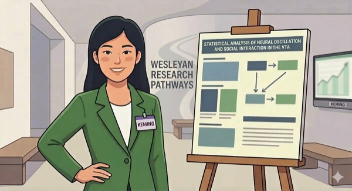
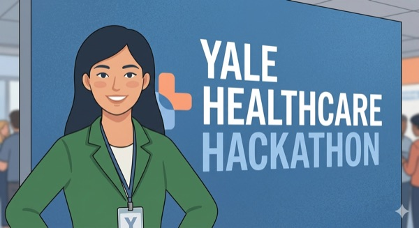
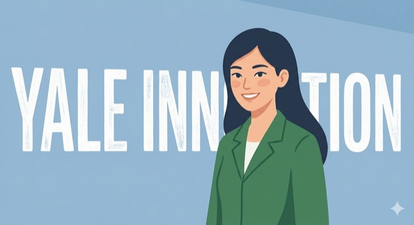
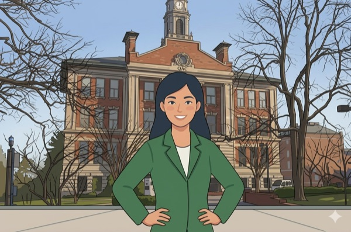
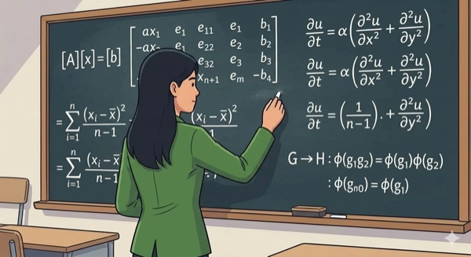
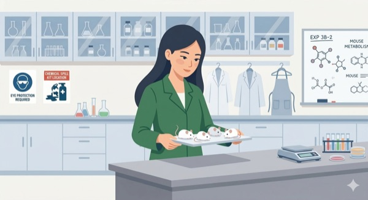
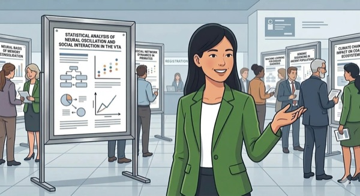
SHAP and LOFO pipelines on HPC clusters for transformer models. Token-level attribution to identify linguistic drivers of creativity scores.
LSTM motor decoding, CRNN audio classification, Steinmetz Neuropixels analysis with PyTorch architectures.
Built end-to-end pipelines for PSD, coherence, PAC, and Granger causality. Discovered ethanol-induced theta-gamma coupling changes during social behavior.
Experience across neuroscience labs, interpretable ML research, and experimental workflows that connect data to behavior.
Course assistant and mentor roles that keep communication, feedback, and pedagogy central to how I work.
Looking for computational neuroscience and AI-for-biology work with room for both rigor and creative problem framing.
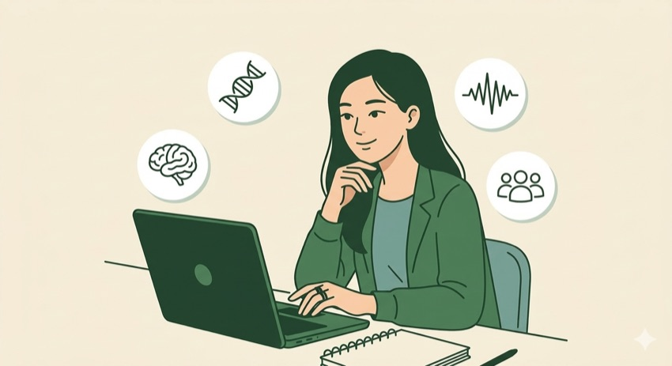
I'm seeking research assistant or internship opportunities in computational neuroscience and AI-for-biology — especially projects combining neural data, behavior, and interpretability.
Graduating May 2027 • Planning graduate school in computational neuroscience
Event-aligned LFP analysis revealing ethanol's selective effects on theta-gamma coupling during social behavior
SHAP and LOFO attribution analysis on HPC clusters to identify linguistic drivers of creativity scores
CRNN-based audio classifier with MFCC features, k-fold validation, and bias mitigation for imbalanced data
LSTM networks predicting left/right movement from cortical spike trains (MOp/MOs)
21-day stress model with behavioral assays linking anxiety reduction to oxidative stress markers
Kauffman network mutation sensitivity simulations on local machines with a focus on computational efficiency
Problem: How does ethanol alter VTA-PFC neural coordination during social interaction?
Approach: Built end-to-end pipelines for PSD, coherence, PAC, and Granger causality on LFP signals.
Result: Discovered ethanol-induced changes in theta-gamma coupling and cross-region interactions.
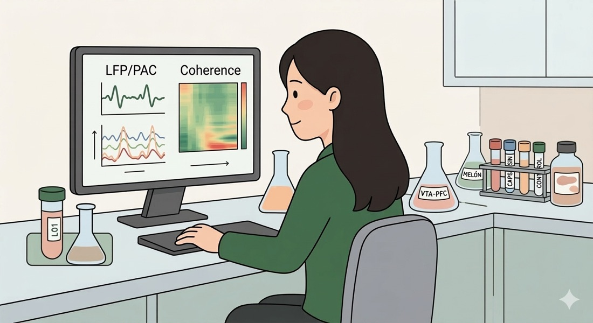
Integrated behavioral segmentation with neural data to examine directional connectivity and individual variability in affect-modulated circuit communication. Presented findings at Summer Symposium 2025 and Research Pathway 2026 to over 200 students.
Problem: Are creativity prediction models capturing genuine linguistic patterns or statistical artifacts?
Approach: Developed token-level SHAP and LOFO interpretability pipelines for transformer models.
Result: Built global/local attribution visualizations revealing linguistic drivers and potential confounds.
Example SHAP scores for one sentence: brighter, longer bars indicate tokens that push the predicted creativity score higher.
Make the logo pink and sparkly then the company will be successful.
Selected to present an overview at Data Insights in March 2026, a student-speaker series at Wesleyan University, demonstrating the project's methodological rigor and relevance to the broader research community.
This work highlights the critical need for interpretability in ML models applied to creative or subjective tasks. I'm particularly interested in how these methods can reveal the difference between genuine pattern recognition and dataset-specific artifacts, a distinction that matters across all ML applications in cognitive science.
Problem: Can raw audio cough data reliably distinguish COVID-19 positive cases?
Approach: CRNN architecture with MFCC features, dataset balancing, and uncertainty analysis.
Result: Achieved robust classification with optimized feature representations and model uncertainty quantification.
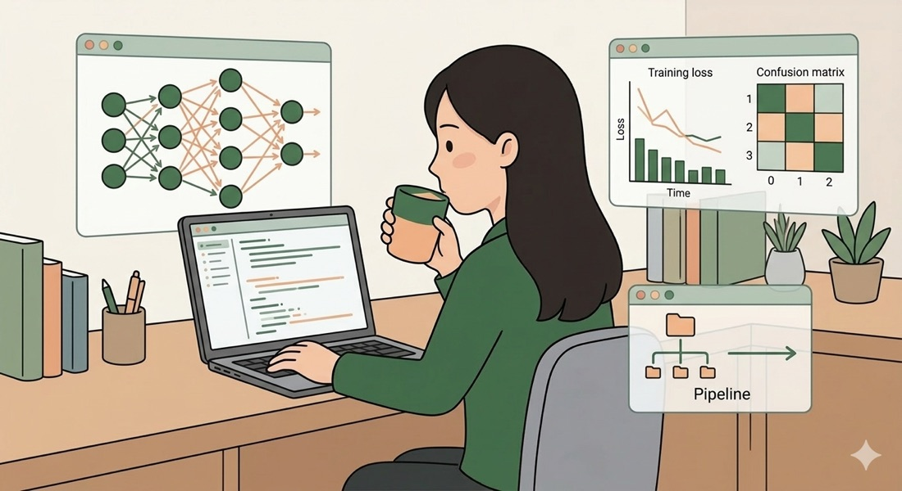
Amplitude of the raw cough signal over time, similar to what you would see in a basic audio editor.
Mel-frequency cepstral coefficients, a time-frequency representation that the CRNN actually uses to separate COVID-positive and control samples.
Analyzed model performance using confusion matrices and F1-optimized thresholds. Collaborated with peers and mentors through GitHub version control and Agile project planning (SMART goals, RACI charts). Participated in weekly workshops covering CV, NLP, statistical models, and AI governance.
This project taught me the importance of addressing data imbalance and bias in healthcare ML applications. The combination of acoustic feature engineering and deep learning opened my eyes to the broader potential of AI in medical diagnostics.
Problem: Can we predict movement intention from pre-motor cortical activity?
Approach: LSTM-based recurrent networks on MOp/MOs spike trains.
Result: Successfully decoded left/right movement decisions from neural activity patterns.
Completed through Neuromatch Academy (Jul 2025), an intensive deep learning curriculum covering optimization, CNNs, RNNs, attention/transformers, self-supervised learning, and reinforcement learning. Built and optimized neural networks using modern optimization algorithms and architectural innovations.
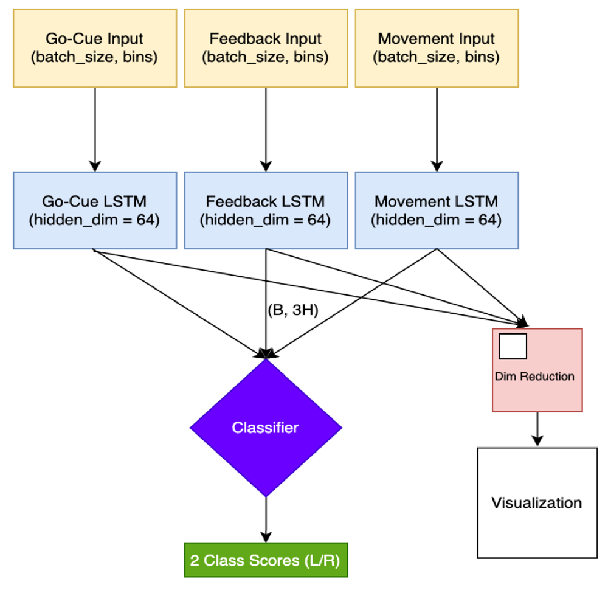
Overview of the LSTM decoding pipeline linking cortical spike trains to left/right movement decisions.
Raster plot animation illustrating neural population activity around movement initiation.
This project demonstrated the power of recurrent architectures for temporal neural data. I'm interested in extending this approach to more naturalistic behavioral paradigms and exploring how attention mechanisms might improve decoding of complex motor sequences.
Problem: Can capsaicin treatment reduce anxiety-like behavior in chronically stressed mice?
Approach: 21-day chronic restraint stress model with behavioral assays and oxidative stress markers.
Result: Capsaicin treatment improved anxiety-like behavior and reduced brain oxidative stress.
Demonstrated correlation between anxiety-like behavior improvement and reduced oxidative stress markers in brain tissue. Results suggest capsaicin's anxiolytic effects may be mediated through antioxidant mechanisms.
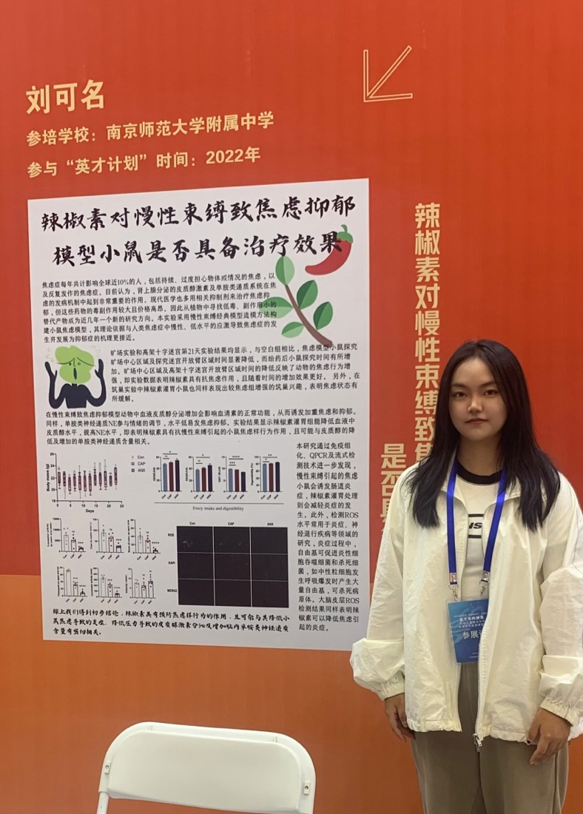
Presenting my work at the Jiangsu K-12 Education Conference as the Yingcai Program student representative.
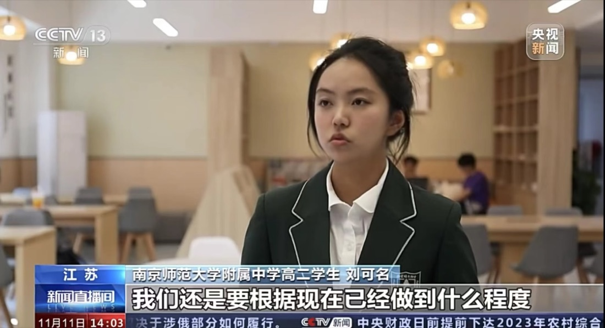
Featured on China Central Television (CCTV) as a high school student conducting research in a university lab.
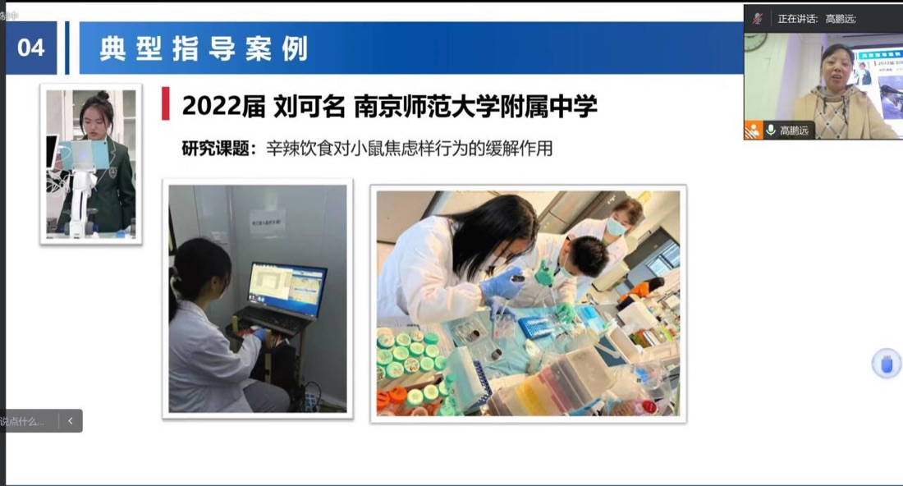
Highlighted in Zhuang Lab as an example of outstanding research by a high school student.
This early research experience introduced me to the importance of rigorous experimental design and statistical analysis in neuroscience. It sparked my interest in understanding the biological mechanisms underlying behavioral change, a theme that continues in my current computational work on neural circuit dynamics.
Problem: How sensitive are genetic regulatory networks to mutations across different attractor states?
Approach: Simulated Kauffman Boolean networks with mutation sensitivity analysis on local machines.
Result: Revealed attractor-dependent vulnerability patterns and explored computational trade-offs for larger simulations.
Click “Simulate mutation cascade” to see how activity spreads across a small Boolean network toy example.
Different attractor states showed varying degrees of sensitivity to mutations, suggesting that network topology and current state jointly determine robustness. Some attractors were remarkably stable, while others were highly vulnerable to single-node perturbations. This has implications for understanding biological robustness and evolvability.
This project taught me the importance of computational efficiency in large-scale simulations, even when running on local machines. What started as a straightforward modeling question became an exercise in thinking about optimization and potential future scaling. I'm interested in extending this approach to more realistic network topologies informed by empirical gene regulatory data, and exploring how network structure shapes evolutionary dynamics.
Turning messy neural signals into reproducible, interpretable evidence across VTA-PFC projects.
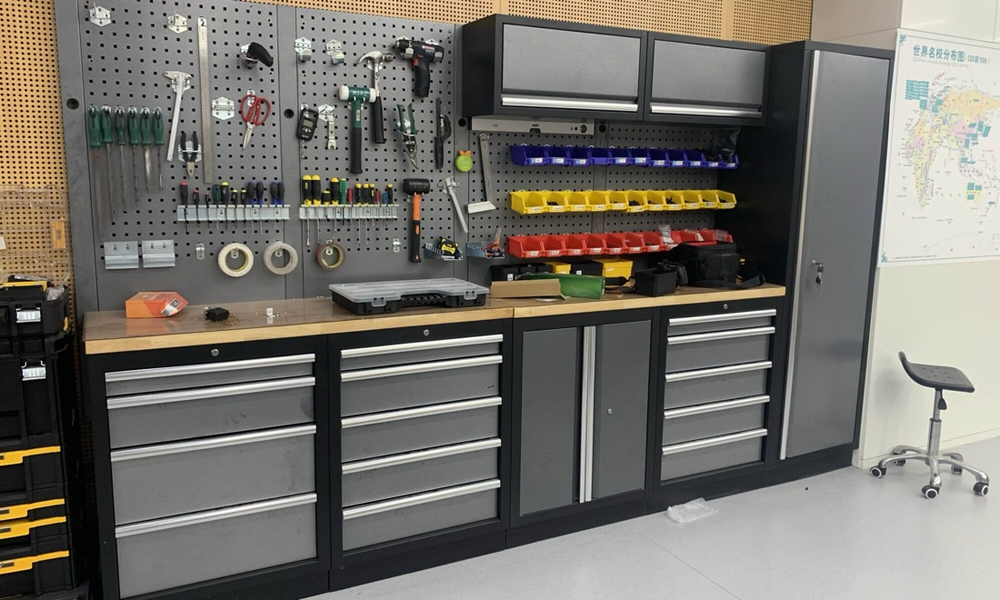
Letting go of perfectionism in art and music to rediscover creative flow.
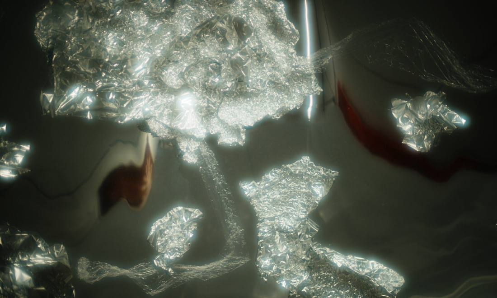
Mentoring across calculus, biology, and global STEM programs as a catalyst for my own growth.
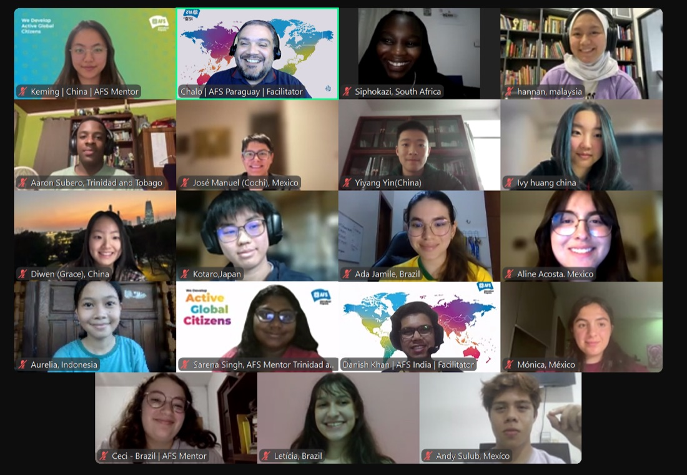
Staying calm under pressure, debugging labs and projects while keeping teammates steady.
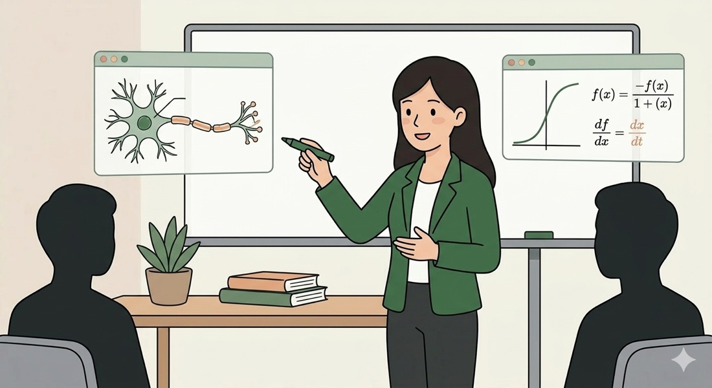
How an overload of classes, labs, work, and art turned multitasking into my default rhythm for learning.
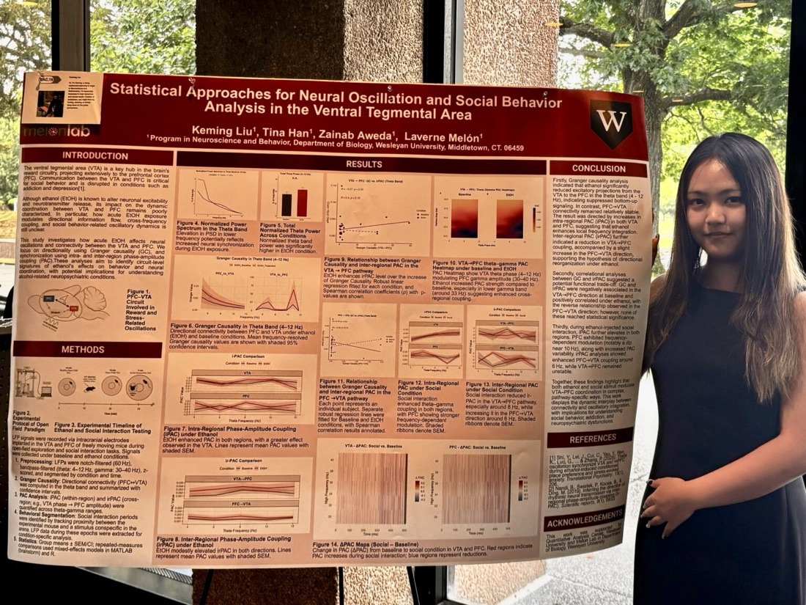
How drawing, philosophy, and art history refine the way I read and design scientific stories.
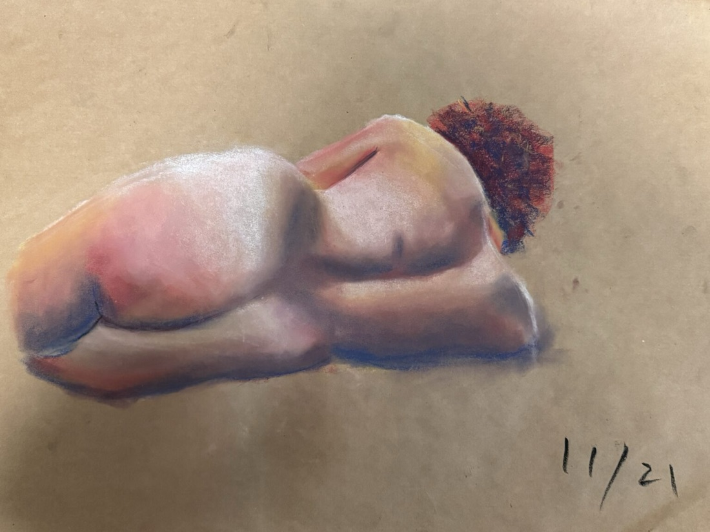
Since getting into Wesleyan, I've realized that multitasking has quietly become both my greatest challenge and my way of living.
During my first semester, I was taking eight credits across ten departments, including Biology, Chemistry, Art Studio, Music, and the College for the Study of Public Life, among others. At the same time, I joined the K-pop Dance Crew (KDC), worked for IMS, and served as a Chinese Language Partner. Beyond coursework and jobs, I also spent late nights writing a fairy-tale research paper for myself, simply because I wanted to.
In my second semester, I took seven credits, again across multiple departments, this time including QAC (Quantitative Analysis Center at Wesleyan University), COL (College of Letters — the study of European literature, history, and philosophy from antiquity to the present), and DDC (Digital Design Commons). I continued dancing with KDC and working for IMS, while also mentoring for AFS and interning for an AI startup, TMind. I even tried tutoring at Traverse Square, which helped me learn that not every opportunity fits me, and that balance is just as important as ambition.
Now, my life hasn't slowed down. If anything, it's become more layered. But I've come to see multitasking not as chaos, but as rhythm. My Google Calendar, filled with color-coded classes, meetings, and projects, feels like a visual diary of my interests and curiosities. I enjoy the feeling of constantly learning, working, and creating; each task connects to a different part of who I am. Although it can be tiring, I find meaning in being busy with a purpose.
I don't think I could ever live a single-threaded life. Multitasking keeps me alert, adaptable, and alive, and it's how I explore and live in the world at the current stage.
My technical strength lies in establishing an end-to-end workflow that transforms disorganized data into reproducible evidence with clear visualization. In neuroscience projects at the lab, I routinely process LFP and behavioral data from the VTA-PFC pathway, translating statistical analyses into charts and conclusions that support evidence-based arguments. Specifically for signal processing, I bridge Brainstorm and MATLAB by performing frequency/harmonic suppression and bandpass filtering, event-based epoch segmentation (e.g., social vs. non-social, EtOH vs. saline), and baseline correction, followed by PSD using Welch's method. I conduct coherence and Granger causality analyses on VTA-PFC connections, distinguishing between intra-area phase-amplitude coupling (iPAC) and inter-area phase-amplitude coupling (irPAC). Finally, I export the results in a structured form for review and visualization in R.
I began with coursework and lab training, translating classroom statistics and signal processing knowledge into real-world data; subsequently, I participated in Neuromatch Academy's deep learning boot camp, systematically filling gaps in modeling and evaluation frameworks. In my daily research, I continuously review the literature, reproduce previous lab scripts, and refactor fragmented scripts into parameterized, modular functions (e.g., standardizing filter and epoch parameters, and unifying export fields). Combined with simple unit tests and small-sample regression checks, this ensures modifications do not break existing results. For version control, I used Git/GitHub to track changes, documented README files, and maintained runtime environments, striving for reproducibility where the same raw data and the same parameters yield the same results.
Presenting “Statistical Approaches for Neural Oscillation and Social Behavior Analysis in the Ventral Tegmental Area” at Exley Science Center, Wesleyan University, Middletown, CT
In machine learning and interpretability, I built a small closed loop from prototype to explanation using Python: I implemented MLP classification/regression prototypes with PyTorch to understand trade-offs between width, depth, and expressiveness. For text-scoring interpretability, I combined Hugging Face and SHAP to run prototypes, generating token-importance distributions and confidence intervals to pinpoint elements influencing model decisions and preliminarily screen for potential biases.
Visualization and design represent another strength. I approach scientific graphics as information design challenges, unifying color palettes and annotation hierarchies, standardizing the presentation of axes, legends, and error bars, and controlling alignment and white space between subplots using BioRender. When necessary, I use Illustrator for final refinements to ensure posters or slides remain readable at a distance.
As a sophomore, over the past year, I have continued to grow in various mentoring roles spanning multiple disciplines and a global STEM program. Each experience has not only deepened my understanding of the meaning behind the saying "Teaching and learning are mutually beneficial," but has also helped me better understand myself and others.
As a Course Assistant (CA) for Calculus I, I needed to refresh my understanding of concepts such as limits and derivatives, while also learning to teach others in a simple, logical manner. During my weekly CA sessions, I noticed that students often struggled with the concepts themselves rather than the specific calculations in each problem set. Over time, I learned to explain abstract ideas visually, making concepts such as rates of change and the area under curves feel more intuitive and tangible. Every time a student transitions from confusion to sudden understanding, I feel a deep sense of fulfillment as a young teacher. Grading assignments for over seventy students has honed my patience and attention to detail, and I've learned to maintain fairness and standards while using feedback to foster their growth.
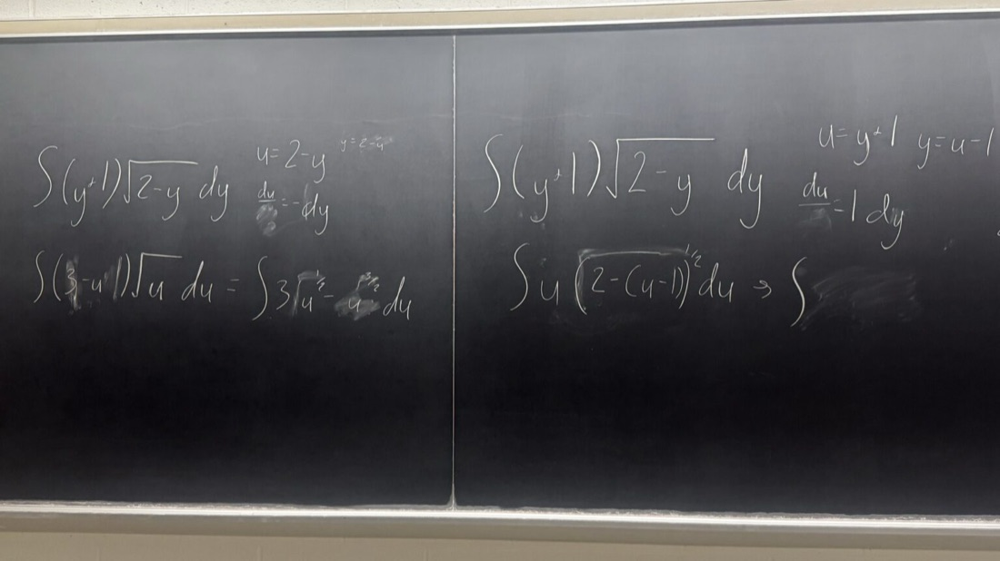
When I encourage students to consider different possible methods to solve a problem, I think of myself as a bridge. As an Intro to Biology Tutor for the Dean's Tutoring Program, working with students from diverse backgrounds and learning styles, I try to explain complex biological concepts in a more accessible manner; for instance, I could compare a signal transduction pathway to a multi-layered relay race of information transfer. I realize teaching isn't just a transfer of knowledge, but a complex process of listening and understanding. Seeing students' grades improve from a 67 to a 96 makes me feel incredibly proud.
Simultaneously, in the AFS Global STEM Mentorship international online program, I served as a cross-cultural mentor for the first time, guiding students from diverse countries through their 12-week research exploration and graduation projects. Beyond weekly live meetings, I provided ongoing feedback in the Bridge forum to help refine their research approaches and presentation content. I learned to maintain warmth and efficiency in communication across multiple time zones and cultures. Still, I also realize that mentoring isn't one-sided: it's a shared journey of mutual growth and inspiration.
Through collaboration, I realized that one of my strengths lies in stabilizing my own emotions first, then calming the team when faced with pressure.
Once, while analyzing data in the lab, our group's equipment suddenly malfunctioned, causing the sampling signals to become erratic. With tight deadlines and limited samples, the atmosphere grew tense. Another student became visibly upset, insisting we restart the experiment. Though equally anxious, my initial reaction wasn't to blame anyone or panic over redoing the work. Instead, I swiftly checked potential sources of error. I cross-checked instrument connections, parameter settings, and backup data, ultimately pinpointing poor electrode contact as the culprit. After recalibration, we salvaged the data and avoided unnecessary duplication. In that moment, I understood that emotional stability itself is a form of efficiency for me and my collaborators.
A similar scenario unfolded in an AI group project in which I participated. We had planned weekly progress reports, but midway through, one member consistently failed to deliver code due to scheduling conflicts. Others began complaining about the delay. Instead of joining in the emotional blame, I spoke privately with that student to understand where he was stuck. I helped him debug the issue and proactively adjusted task assignments at the next meeting, allowing everyone to focus on their strongest areas. Ultimately, we successfully built the model, and that student later reintegrated into the team's rhythm.
I think I hold myself to high standards, often burning the midnight oil to refine code or polish experimental charts. Yet I have tried my best not to impose this self-imposed rigor as pressure on others.
I prefer to shape the team atmosphere through steadiness and patience. For me, composure isn't emotional absence, but a way to manage energy, allowing me to think clearly and act effectively even amid conflict and uncertainty, and always stand with my team members.
When I first came to Wesleyan, I signed up for Drawing I, even though I had never done anything close to serious drawing before. I thought drawing was mostly about skill, like getting every line right, fixing mistakes, and working until the picture looked "perfect." So when our big assignment was a life-size self-portrait, I threw myself into it.
I spent hours staring at my own reflection and the huge sheet of paper in front of me, trying to capture every line of my face. Sometimes I'd erase the same section five, six times, because it didn't look exactly right. I was working so hard that I didn't even realize how tense I was, how much I was fighting with the drawing. I thought that was what "working hard" meant: keep pushing, fix every problem, and eventually it will turn out the way you want.
One day, my professor came by, looked at what I was doing, and said softly, "It's not about how much time you spend or how many details you fix. It's about the flow of the whole drawing." That stopped me.
I stepped back and looked at the page differently. I started noticing how the lines connected, how the space felt on the paper. The drawing slowly became less stiff. It felt like it had air in it now, like it was alive.
Later, in my private jazz vocal lessons, my professor told me almost the same thing about singing: "When you improvise, stop trying to construct what you think will sound good. Let the music flow out naturally." The problem was that I became rigid and stiff whenever I tried to force a harmonious sound. At first, I didn't really understand it. I still wanted to control. I tried to plan the "right" notes. But the more I forced it, the more rigid it sounded. Only when I relaxed and trusted the music did it start to feel real and natural.
This shift made me realize that striving doesn't always mean being in control. I've always had a competitive streak, and I hate leaving things in a state of "not good enough." But now I'm starting to see that sometimes I have to loosen up first, give myself space to feel and experiment, instead of constantly chasing perfection.
For me, interdisciplinarity isn't about mechanically grafting different fields of knowledge together; it's a mindset of building bridges between reason and emotion, science and art. I've always believed understanding the world shouldn't be linear; it requires both reasoning and feeling, both calculation and depiction.
In scientific research, I study neuroscience and computational models, analyzing the rhythms of brain signals and their connections to behavior. Scientific training has conditioned me to describe phenomena through logic, data, and causality; yet, I've gradually realized that science's language often falls short of fully expressing the complexities of life. Painting helps bridge this gap: in sketching, I must grasp how light and shadow sculpt space, and how forms extend beyond the paper's surface. This visual discipline sharpens my ability to discern structural relationships in scientific charts, teaching me how to perceive the "aesthetic of form" behind data.
Once, while designing a poster, I spent hours adjusting colors and layout to ensure viewers could grasp the flow of experimental logic within seconds. These approaches, perhaps not considered "traditional science," allowed me to discover a new sense of order in expression, an order that integrates different modes of thinking.
Philosophical studies similarly broadened my cross-disciplinary perspective. Reading Husserl, I was struck by how his descriptions of "structures of experience" mirrored neural representations. Studying art history revealed that formalist painters, like scientists, uncovered visual laws through experimentation. Scientific training equipped me with precision and validation skills, while art and philosophy taught me to remain open amidst uncertainty.
This interdisciplinary mindset has become central to my learning: I pursue aesthetic order within science and seek logical structure within art. For me, the meaning of knowledge lies not in compartmentalization, but in establishing a dialogue between reason and sensibility: it is how I understand the world and, ultimately, myself.
Sept 2025 to Present • Wesleyan University
Mentoring two first-year women in STEM through academic planning, course selection, and peer support; focusing on confidence-building and community within quantitative fields.
Sept to Dec 2025 • Wesleyan University
Facilitated one-on-one and small-group sessions for introductory biology; translated complex pathways into clear analogies and guided practice for exams.
Jan 2026 to Present • Wesleyan University
Assist with course materials and in-class support on deep learning and LLM concepts; hold debugging office hours for PyTorch implementations and conceptual check-ins.
Sept 2025 to Present • Wesleyan University, Middletown, CT
Sept 2025 to Present • Wesleyan University
I am a Biology and Mathematics student at Wesleyan University dedicated to building the pipelines that turn raw neural signals into clear, actionable stories.
I love learning across disciplines, from biology labs to AI startups, philosophy seminars to drawing studios. I'm happiest when I'm working, teaching, and creating at the same time. Multitasking has become my rhythm: not chaos but a way of staying alert, adaptable, and alive.
Right now debugging PAC scripts and sketching new figures.
Off the clock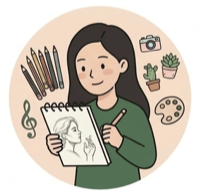
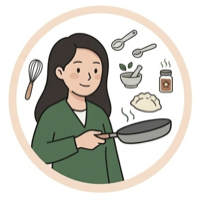
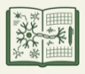
ResearchMelón Lab • Laverghetta Lab • Mandalaywala Lab • Pu Lab
Deep Learning CA • Biology Tutor • Calculus CA • AFS Global Mentor • Women in STEM
Neuromatch Academy • AI4ALL Ignite • QAC Apprenticeship • AFS STEM Academies
Wesleyan University • Biology & Mathematics • Class of 2027
I'm seeking research assistant or research internship opportunities in computational neuroscience and AI-for-biology — especially projects combining neural data, behavior, and interpretability. Class of 2027, actively looking for Summer 2026 internships.
Graduating May 2027 • Planning graduate school in computational neuroscience